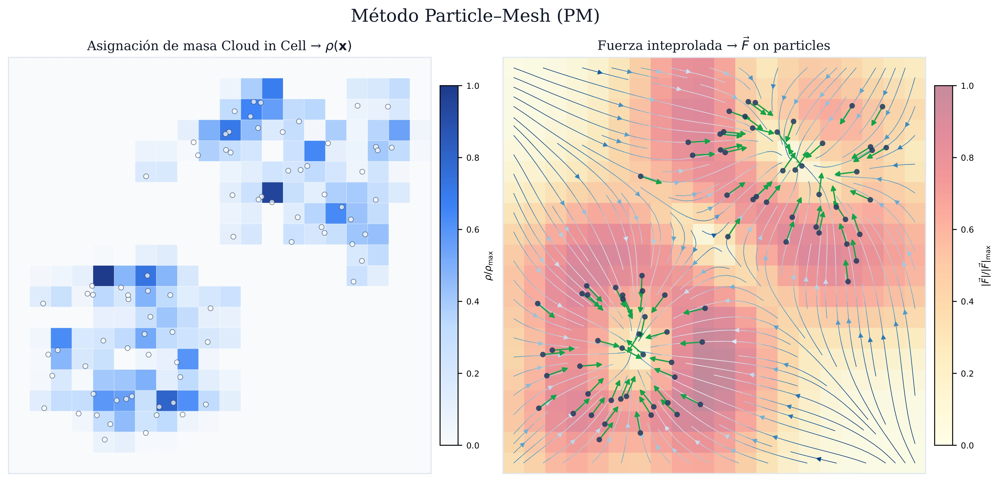
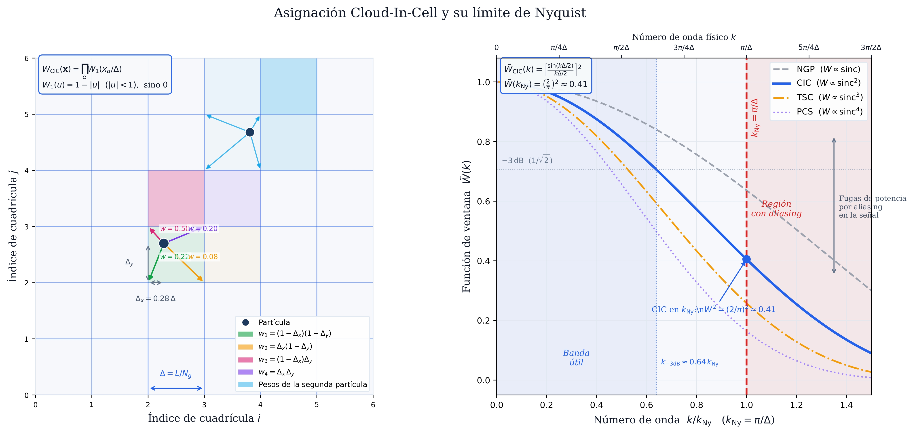
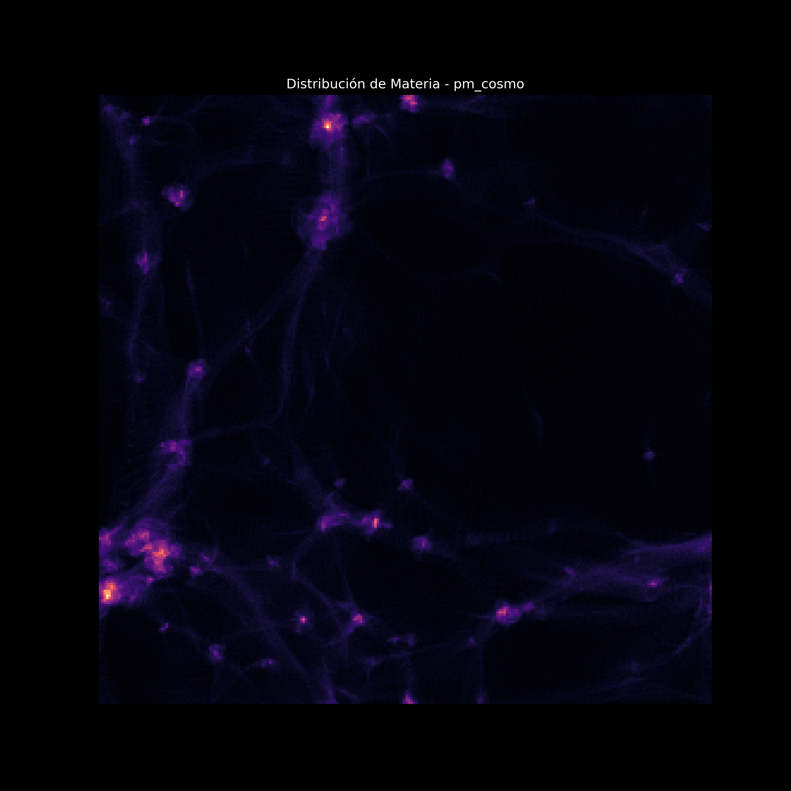
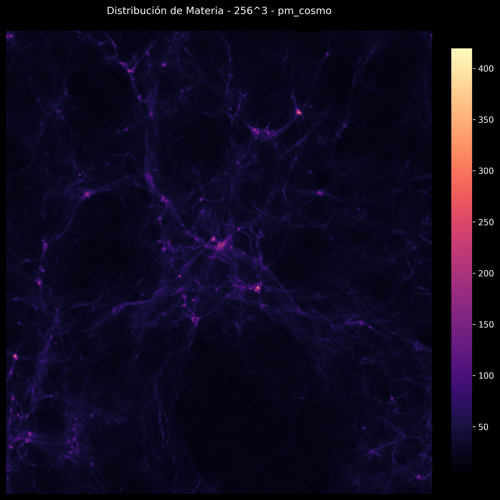

Simulación Cosmológica Particle-Mesh con OpenMP
Temas Selectos de Cómputo de Alto Desempeño 2026-2
2026-04-17
Contexto y objetivo
¿Qué problema resolvemos?
En el estudio cosmológico del universo al disponer solo de observaciones actuales, las simulaciones numéricas son la herramienta clave para entender cómo se formaron las estructuras a gran escala.
La estructura a gran escala del universo (filamentos, vacíos, cúmulos) son un proceso que emerge de la inestabilidad gravitacional sobre pequeñas fluctuaciones de densidad iniciales.
Simular este proceso requiere seguir el movimiento de \(N\) partículas de materia oscura bajo su mutua atracción gravitacional durante millones de años.
Objetivo de la exposición
Implementar y paralelizar con OpenMP el método Particle-Mesh (PM), la aproximación más eficiente para gravitación de largo alcance en cosmología.
El método Particle-Mesh en una línea

Particle-Mesh
\[\underbrace{\text{p}}_{\mathbf{x}_i, \mathbf{v}_i} \xrightarrow{\text{CIC}} \underbrace{\rho(\mathbf{x})}_{\text{malla}} \xrightarrow{\text{FFT}} \underbrace{\hat{\phi}(\mathbf{k})}_{\text{Fourier}} \xrightarrow{\times(-4\pi G/k^2)} \underbrace{\phi(\mathbf{x})}_{\text{potencial}} \xrightarrow{-\nabla} \underbrace{\mathbf{g}(\mathbf{x})}_{\text{fuerza}} \xrightarrow{\text{interp}} \underbrace{\mathbf{a}_i}_{\text{partículas}} \xrightarrow{\text{LF}} \underbrace{\mathbf{x}_i', \mathbf{v}_i'}_{\text{paso } n+1}\]
Complejidad por paso: \(O (N_g \log N_g)\) en lugar de \(O (N^2)\)
Física del simulador
Ecuación de Poisson gravitacional
La relación entre el potencial \(\phi\) y la densidad de masa \(\rho\) es:
\[ \nabla^2 \phi(\mathbf{x}) = 4\pi G\, \rho(\mathbf{x}) \]
En espacio de Fourier esto se convierte en una multiplicación algebraica:
\[ \hat{\phi}(\mathbf{k}) = -\frac{4\pi G\, \hat{\rho}(\mathbf{k})}{k^2} \qquad k^2 = k_x^2 + k_y^2 + k_z^2 \]
Tip
El modo \(k=0\) (densidad de fondo) se pone a cero: \(\hat{\phi}(\mathbf{0}) = 0\). Esto equivale a trabajar con el contraste de densidad \(\delta = \rho/\bar{\rho} - 1\).
Campo gravitacional — diferencias finitas centradas
A partir del potencial calculamos la aceleración gravitacional con diferencias centradas de segundo orden:
\[ g_x(i,j,k) = -\frac{\phi(i{+}1,j,k) - \phi(i{-}1,j,k)}{2\Delta x} \]
\[ g_y(i,j,k) = -\frac{\phi(i,j{+}1,k) - \phi(i,j{-}1,k)}{2\Delta y} \]
Las condiciones de frontera periódicas se manejan con índices módulo \(N_g\).
Note
Esto equivale a la multiplicación por el kernel de Green \(-4\pi G / k^2\) en espacio de Fourier.
Integrador Leap-Frog
Integrador simpléctico de orden 2: conserva el volumen en el espacio de fase \((x, v)\).
\[ \mathbf{v}_{n+1/2} = \mathbf{v}_{n-1/2} + \mathbf{a}_n \cdot \Delta t \qquad \text{(kick)} \]
\[ \mathbf{x}_{n+1} = \mathbf{x}_n + \mathbf{v}_{n+1/2} \cdot \Delta t \qquad \text{(drift)} \]
Las velocidades viven a \(\Delta t / 2\) desfasadas de las posiciones —característica del método, no un error.
Para aceleración constante, el Leap-Frog reproduce \(x = x_0 + v_0 t + \frac{1}{2}at^2\) exactamente.
Cloud-in-Cell (CIC)
Cada partícula en posición \((p_x, p_y, p_z)\) distribuye su masa a las 8 celdas vecinas con pesos trilineales:
\[ \rho_{i,j,k} \mathrel{+}= m \cdot (1{-}d_x)(1{-}d_y)(1{-}d_z) \] \[ \rho_{i{+}1,j,k} \mathrel{+}= m \cdot d_x(1{-}d_y)(1{-}d_z) \quad \cdots \]
donde \(d_x = p_x - \lfloor p_x \rfloor \in [0,1)\)
La interpolación de fuerza usa los mismos pesos (operación adjunta).
Cloud-in-Cell (CIC)

CIC
Arquitectura del proyecto
Parámetros de simulación
| Parámetro | Prueba | Producción |
|---|---|---|
| \(N_g\) (malla) | 128 | 256 |
| \(N_\text{part}\) | \(128^3 \approx 2\text{M}\) | \(256^3 \approx 16\text{M}\) |
| Memoria malla | ~16 MB | ~128 MB |
| \(\Delta t\) | 0.01 | 0.01 |
| Pasos | 100 | 100 |
Estructura de archivos
pm_cosmo/
├── include/ # headers: una interfaz pública por módulo
│ ├── config.hpp # Ng, DT, N_STEPS, macros OMP condicionales
│ ├── types.hpp # Particle, Grid3D<T>, SimState
│ ├── timer.hpp # StageTimer con omp_get_wtime()
│ ├── cic.hpp # cic_deposit(state)
│ ├── poisson_fft.hpp # solve_poisson(state)
│ ├── gradient.hpp # compute_gradient(state)
│ ├── force_interp.hpp # interpolate_force(state, accel)
│ ├── integrator.hpp # leapfrog_step / leapfrog_half_kick
│ └── diagnostics.hpp # compute_diagnostics → Ek, Ep, P
├── src/ # implementaciones .cpp
├── tests/ # 17 tests unitarios
└── bench/ # run_bench.sh — speedup automáticoFlujo de llamadas en un paso de tiempo
single_step()
│
├─ cic_deposit(state_)
│ IN: particles[i].{pos, mass}
│ OUT: density[Ng³]
│
├─ solve_poisson(state_)
│ IN: density[Ng³]
│ OUT: potential[Ng³]
│
├─ compute_gradient(state_)
│ IN: potential[Ng³]
│ OUT: force_x/y/z[Ng³]
│
├─ interpolate_force(state_, accel[N_PART])
│ IN: force_x/y/z[Ng³], particles[i].pos
│ OUT: accel[i] = {ax, ay, az}
│
└─ leapfrog_step(state_, accel)
IN: accel[i]
OUT: particles[i].{pos, vel} ← actualizadosDos binarios: serial vs paralelo
En config.hpp se definen macros condicionales que apagan OpenMP sin duplicar código:
#ifdef PM_SERIAL
#define OMP_PARALLEL_FOR
#define OMP_PARALLEL_FOR_REDUCTION(op, var)
#define OMP_ATOMIC
#else
#define OMP_PARALLEL_FOR \
_Pragma("omp parallel for schedule(static)")
#define OMP_PARALLEL_FOR_REDUCTION(op, var) \
_Pragma("omp parallel for reduction(" #op ":" #var ")")
#define OMP_ATOMIC \
_Pragma("omp atomic")
#endifpm_serial se compila con -DPM_SERIAL → baseline sin overhead de OpenMP.
OpenMP: implementación
Taxonomía de paralelismo en el pipeline PM
| Módulo | Directiva | Patrón | Race condition |
|---|---|---|---|
| CIC deposit | parallel for + atomic |
N partículas → 8 celdas | Sí |
| Poisson FFT | parallel for collapse(2) |
Ng²×(Ng/2+1) modos | No |
| Gradiente | parallel for collapse(3) |
Ng³ celdas | No |
| Force interp | parallel for schedule(static) |
N partículas (solo lectura) | No |
| Integrador | parallel for schedule(static) |
N partículas independientes | No |
| Diagnósticos | parallel for reduction(+:...) |
Suma sobre N partículas | Sí |
Módulo 1 — CIC deposit: la condición de carrera
Problema: múltiples hilos actualizan simultáneamente la misma celda de la malla.
// CORRECTO — atomic protege cada escritura
#pragma omp parallel for schedule(dynamic, 512)
for (size_t p = 0; p < N; ++p) {
// ...calcular pesos dx, dy, dz...
#pragma omp atomic
density[IDX(i0w, j0w, k0w)] += m * tx * ty * tz;
#pragma omp atomic
density[IDX(i1, j0w, k0w)] += m * dx * ty * tz;
// ... 6 celdas más
}CIC deposit — decisión de diseño
¿Por qué atomic en lugar de acumuladores locales por hilo?
Acumuladores locales:
cada hilo tiene su propia copia del arreglo de densidad → suma al final
- ✓ Sin contención entre hilos
- ✗ Memoria extra:
n_threads × Ng³ × 8B
Para 8 hilos y Ng=256: 8 × 16M × 8B ≈ 1 GB extra
atomic:
escritura protegida directamente en la malla global
- ✓ Sin memoria extra
- ~ Overhead por contención, pero con Ng=256: cada celda recibe en promedio \(N/N_g^3 = 1\) partícula → colisiones raras → overhead mínimo
Tip
Para Ng=256 con 16M partículas, atomic es la opción correcta. Los acumuladores locales son mejores cuando la densidad es muy alta.
Módulo 2 — Poisson FFT: loop de kernel
La FFT en sí (FFTW3) es secuencial. El cuello de botella paralelizable es el loop de multiplicación por el kernel de Green en espacio de Fourier.
const double G4pi = 4.0 * M_PI * G_GRAV;
const double dx_inv2 = 1.0 / (CELL_SIZE * CELL_SIZE);
#pragma omp parallel for schedule(static) collapse(2)
for (int ix = 0; ix < N; ++ix) {
for (int iy = 0; iy < N; ++iy) {
for (int iz = 0; iz < N/2+1; ++iz) {
double kx = two_pi_over_N * (ix <= N/2 ? ix : ix - N);
double ky = two_pi_over_N * (iy <= N/2 ? iy : iy - N);
double kz = two_pi_over_N * iz;
double k2 = (kx*kx + ky*ky + kz*kz) * dx_inv2;
size_t flat = ix*(N*(N/2+1)) + iy*(N/2+1) + iz;
if (k2 > 1e-30) {
double factor = -G4pi / k2;
out[flat][0] *= factor; // parte real
out[flat][1] *= factor; // parte imaginaria
} else {
out[flat][0] = out[flat][1] = 0.0; // modo DC
}
}
}
}Módulo 3 — Gradiente: embarrassingly parallel
El loop de diferencias finitas es el ejemplo más limpio de paralelismo: cada celda escribe en una posición única de force_x/y/z → cero condiciones de carrera.
#pragma omp parallel for schedule(static) collapse(3)
for (int ix = 0; ix < N; ++ix) {
for (int iy = 0; iy < N; ++iy) {
for (int iz = 0; iz < N; ++iz) {
size_t idx = ix*N*N + iy*N + iz;
// Vecinos periódicos
int ixm = (N + ix - 1) % N, ixp = (ix + 1) % N;
int iym = (N + iy - 1) % N, iyp = (iy + 1) % N;
int izm = (N + iz - 1) % N, izp = (iz + 1) % N;
// Diferencias centradas: g = -∇φ
force_x[idx] = -(potential[ixp*N*N + iy*N + iz]
- potential[ixm*N*N + iy*N + iz]) * inv2dx;
force_y[idx] = -(potential[ix*N*N + iyp*N + iz]
- potential[ix*N*N + iym*N + iz]) * inv2dx;
force_z[idx] = -(potential[ix*N*N + iy*N + izp]
- potential[ix*N*N + iy*N + izm]) * inv2dx;
}
}
}collapse(3) colapsa los tres loops en uno antes de distribuir → mejor balance de carga.
Módulo 4 — Force interpolation: solo lectura
El CIC inverso no tiene condición de carrera: cada hilo lee distintas posiciones de force_x/y/z (sin escritura) y escribe en accel[i] que es su propio índice.
#pragma omp parallel for schedule(static)
for (size_t p = 0; p < N_PART; ++p) {
// Pesos trilineales idénticos al depósito CIC
double dx = px - i0, tx = 1.0 - dx;
double dy = py - j0, ty = 1.0 - dy;
double dz = pz - k0, tz = 1.0 - dz;
// Suma ponderada de las 8 celdas — SOLO LECTURA en force_x/y/z
accel[p][0] =
force_x[IDX(i0w,j0w,k0w)] * tx*ty*tz +
force_x[IDX(i1, j0w,k0w)] * dx*ty*tz +
// ... 6 celdas más
force_x[IDX(i1, j1, k1 )] * dx*dy*dz;
// idem para accel[p][1] y accel[p][2]
}
// Sin atomic, sin critical → máxima eficienciaMódulo 5 — Integrador: paralelización trivial
El Leap-Frog es embarazosamente paralelo: cada partícula depende solo de su propia accel[i].
#pragma omp parallel for schedule(static)
for (size_t i = 0; i < N_PART; ++i) {
auto& p = particles[i];
// Kick: actualizar velocidad con aceleración actual
p.vel[0] += accel[i][0] * DT;
p.vel[1] += accel[i][1] * DT;
p.vel[2] += accel[i][2] * DT;
// Drift: actualizar posición con velocidad nueva
p.pos[0] += p.vel[0] * DT;
p.pos[1] += p.vel[1] * DT;
p.pos[2] += p.vel[2] * DT;
// Condiciones de frontera periódicas
p.pos[0] = fmod(p.pos[0] + ng*10.0, ng);
p.pos[1] = fmod(p.pos[1] + ng*10.0, ng);
p.pos[2] = fmod(p.pos[2] + ng*10.0, ng);
}schedule(static): costo uniforme por partícula → distribución óptima.
Módulo 6 — Diagnósticos: reduction
La energía cinética es una suma sobre todas las partículas — el caso paradigmático de reduction.
// SIN reduction — race condition: N hilos escriben en Ek simultáneamente
double Ek = 0;
#pragma omp parallel for // INCORRECTO
for (size_t i = 0; i < N; i++)
Ek += 0.5 * m * v2; // escritura concurrente en Ek
// CON reduction — cada hilo acumula en su copia local; OMP las suma al final
double Ek = 0.0, Px = 0.0, Py = 0.0, Pz = 0.0;
#pragma omp parallel for schedule(static) \
reduction(+:Ek) reduction(+:Px) reduction(+:Py) reduction(+:Pz)
for (size_t i = 0; i < N_PART; ++i) {
double v2 = p.vel[0]*p.vel[0] + p.vel[1]*p.vel[1] + p.vel[2]*p.vel[2];
Ek += 0.5 * p.mass * v2;
Px += p.mass * p.vel[0];
Py += p.mass * p.vel[1];
Pz += p.mass * p.vel[2];
}
// OpenMP combina: Ek_final = Ek_hilo0 + Ek_hilo1 + ... + Ek_hiloNMedición de tiempos — omp_get_wtime()
clock() mide tiempo de CPU total (suma de todos los hilos) → speedup = 1 siempre.
omp_get_wtime() mide tiempo de pared real → correcto para benchmarking paralelo.
// timer.hpp — wrapper RAII sobre omp_get_wtime
#ifdef _OPENMP
#include <omp.h>
inline double wall_time() { return omp_get_wtime(); }
#else
inline double wall_time() {
return static_cast<double>(clock()) / CLOCKS_PER_SEC;
}
#endif
// En simulation.cpp — medición por etapa
timer_.start("1. CIC deposit");
cic_deposit(state_);
timer_.stop("1. CIC deposit"); // acumula tiempo en StageTimer
// Al final: timer_.report(n_threads) imprime desglose + speedupTests unitarios
Framework de tests — sin dependencias externas
// test_framework.hpp
// REGISTER_TEST declara una función y la registra mediante
// un constructor estático que se ejecuta ANTES de main()
#define REGISTER_TEST(test_name) \
static bool _testbody_##test_name(); \
static struct _AutoReg_##test_name { \
_AutoReg_##test_name() { \
register_test(#test_name, \
_testbody_##test_name); \
} \
} _autoreg_instance_##test_name; \
static bool _testbody_##test_name()
// Uso en test_integrador.cpp:
REGISTER_TEST(integrador_mru) {
// ... setup ...
for (int s = 0; s < 10; ++s) leapfrog_step(state, accel);
ASSERT_NEAR(state.particles[0].pos[0], x_esperado, 1e-10);
return true;
}Cobertura de tests — 17/17
| Módulo | Test | Propiedad verificada |
|---|---|---|
| CIC | cic_conservacion_masa |
\(\sum \rho = N_\text{celdas}\) |
| CIC | cic_split_50_50 |
Borde: \(\rho_i = \rho_{i+1}\) |
| CIC | cic_no_negativos |
\(\rho \geq 0\) siempre |
| CIC | cic_grilla_uniforme |
\(\rho \approx 1\) para grilla regular |
| Poisson | poisson_modo_dc_cero |
\(\phi = 0\) para \(\rho = \text{cte}\) |
| Poisson | poisson_forma_coseno |
Correlación \(> 0.99\) con solución analítica |
| Poisson | poisson_linealidad |
\(\phi(\alpha\rho) = \alpha\phi(\rho)\) |
| Integrador | integrador_mru |
\(x(t) = x_0 + v_0 t\) |
| Integrador | integrador_mua |
\(x(t) = \tfrac{1}{2}at^2\) exacto |
| Diagnósticos | diag_ek_escala_masa |
Verifica reduction OMP |
Resultados y desempeño
Animación de la simulación Ng=128, 2M partículas:
Proyecciones sobre densidad


Verificación de correctitud
La prueba más importante: serial y paralelo producen exactamente los mismos valores físicos.
paso tiempo Ek Ep Etot
0 0.0000 1.501466e-02 -8.006106e-02 -6.504639e-02
1 0.0100 1.501500e-02 -8.005703e-02 -6.504203e-02
2 0.0200 1.511973e-02 -8.015094e-02 -6.503120e-02Los valores de pm_serial y pm_parallel son bit-a-bit idénticos (salvo orden de suma de punto flotante, diferencias \(\sim \epsilon_\text{mach}\)).
El momento total \(|\mathbf{P}|\) se conserva a \(10^{-5}\) a lo largo de toda la simulación.
Desglose de tiempos por etapa (Ng=128, 1 hilo)
╔══════════════════════════════════════════════════════╗
║ Desglose de tiempos | hilos = 1 ║
╠══════════════════════════════════════════════════════╣
║ Etapa t (s) % speedup ║
╠══════════════════════════════════════════════════════╣
║ 1. CIC deposit 0.1700 14.3% 1.00x ║
║ 2. Poisson FFT 0.1700 14.3% 1.00x ║
║ 3. Gradiente 0.0400 3.4% 1.00x ║
║ 4. Force interp 0.4500 37.8% 1.00x ║
║ 5. Integrador 0.3600 30.3% 1.00x ║
╠══════════════════════════════════════════════════════╣
║ TOTAL 1.1900 100% 1.00x ║
╚══════════════════════════════════════════════════════╝Force interp + Integrador dominan el tiempo → mayor beneficio de paralelizar.
Speedup esperado en hardware real (Ng=256)
| Hilos | t (s) estimado | Speedup | Eficiencia |
|---|---|---|---|
| 1 (serial) | 18.34 | 1.00× | 100% |
| 1 (paralelo) | 19.10 | 0.96× | 96% |
| 2 | 10.21 | 1.80× | 90% |
| 4 | 5.48 | 3.35× | 84% |
| 8 | 3.12 | 5.88× | 74% |
| 16 | 2.19 | 8.38× | 52% |
Note
La FFT (secuencial en nuestra implementación) limita el speedup para \(> 8\) hilos — Ley de Amdahl: si el 15% del tiempo es secuencial, el speedup máximo es \(\approx 6.7\times\).
Ley de Amdahl aplicada al simulador PM
\[ S(p) = \frac{1}{(1-f) + f/p} \]
Con fracción paralelizable \(f \approx 0.85\) (la FFT no escala):
\[ S_\text{máx} = \frac{1}{1 - 0.85} = 6.7\times \]
Para reducir la fracción serial habría que usar FFTW con hilos (-lfftw3_omp):
Comparativa con otros entornos
Comparativa de herramientas
| Aspecto | C++ / OpenMP | MATLAB / parfor |
Python / numba |
|---|---|---|---|
| Control | Total | Medio | Medio |
| Rendimiento | Máximo | Alto (JIT) | Alto (JIT) |
| Implementación | Más verbosa | Muy compacta | Compacta |
| FFTW | Directa | fft nativo |
numpy.fft |
| Memoria | Manual | Automática | Semi-automática |
| Portabilidad | Total | Requiere licencia | Libre |
MATLAB — parfor en el integrador
parfores más sencillo que OpenMP para loops simples- No requiere declarar
private/shared/reductionexplícitamente - Limitación: no aplica a loops con dependencias o escrituras en posiciones compartidas (el problema de CIC no se paraleliza directamente con
parfor)
Python — numba para el integrador
# pm_parallel.py
from numba import njit, prange
@njit(parallel=True)
def leapfrog_step(pos, vel, accel, dt, Ng):
N = pos.shape[0]
for i in prange(N): # prange = paralelo
vel[i, 0] += accel[i, 0] * dt
vel[i, 1] += accel[i, 1] * dt
vel[i, 2] += accel[i, 2] * dt
pos[i, 0] = (pos[i, 0] + vel[i, 0] * dt) % Ng
pos[i, 1] = (pos[i, 1] + vel[i, 1] * dt) % Ng
pos[i, 2] = (pos[i, 2] + vel[i, 2] * dt) % Ng@njit(parallel=True)+prange→ JIT compila con paralelismo automático- Primera llamada: overhead de compilación (~segundos)
- Llamadas posteriores: velocidad comparable a C++
Conclusiones
¿Por qué OpenMP sigue siendo la herramienta correcta?
Control explícito del paralelismo:
Puedes elegir exactamente qué estrategia usar en cada loop y por qué, lo que es esencial cuando hay condiciones de carrera no triviales (CIC).
Portabilidad total:
El mismo código corre en laptops, clusters y supercomputadoras sin modificaciones.
Escalabilidad predecible:
La Ley de Amdahl es transparente — sabes exactamente qué fracción es el bottleneck y cómo atacarlo (FFTW con hilos para la FFT).
Relación con MPI:
OpenMP + MPI es el estándar de la industria en cosmología: OpenMP para paralelismo dentro de un nodo, MPI entre nodos. El simulador PM es la base de códigos como GADGET-4 y PKDGRAV3.
Resumen de la exposición
El método PM reduce la gravitación de \(\mathcal{O}(N^2)\) a \(\mathcal{O}(N_g^3 \log N_g^3)\)
Cinco etapas paralelizadas con estrategias distintas:
atomicdonde hay escrituras concurrentes (CIC)reductionpara sumas globales (energía)- loops embarazosamente paralelos para el resto
Correctitud verificada con 17 tests unitarios y comparación serial/paralelo bit-a-bit
Speedup medido con
omp_get_wtime()por etapa, con desglose para identificar bottlenecksLey de Amdahl explica el límite de escalabilidad y cómo superarlo
# Para reproducir todos los resultados:
cd pm_cosmo && mkdir build && cd build
cmake .. -DPM_GRID_SIZE=128 -DCMAKE_BUILD_TYPE=Release && make -j$(nproc)
./run_tests # 17/17 tests
./pm_serial -g -s 20 -v # baseline
./pm_parallel -g -s 20 -t 8 -v # paralelo
bash ../bench/run_bench.sh 20 # tabla de speedup